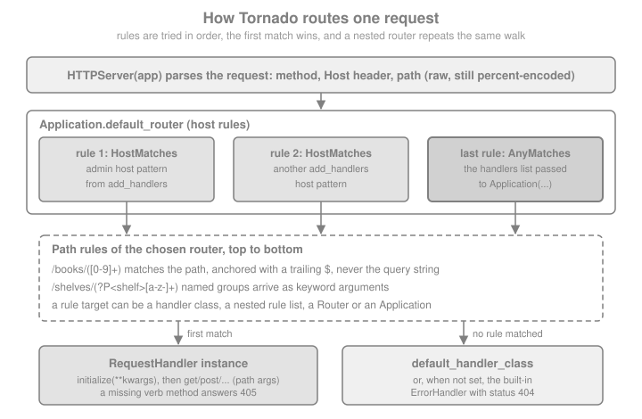

Routing
|
This content was generated with the assistance of AI and should be verified against the official documentation before being relied on in production. |
This page is written against Tornado 6.5.10 (released 2026-09-15), checked on 2026-10-07, with code that uses
Python 3.10+ syntax and was executed on Python 3.13. Tornado 6.6 is not released yet (only the alpha 6.6a1 is on
PyPI); its release notes contain nothing that changes routing, and anything described as "6.6" below is upcoming.
Routing is the first thing every Tornado application declares and the part where the framework differs most from
the decorator-based routing of Flask or FastAPI: URL patterns are plain regular expressions collected in one list,
handlers are classes, and the same Rule machinery that powers Application can be reused, nested and extended
through the tornado.routing module. The examples extend Bookshelf Live, the real-time scenario of this section,
which serves books, shelves and a live feed of reviews, and they can be compared with
Routing and URL Building in Flask,
Path Parameters in FastAPI and
URLs and Routing in Django.
How Tornado Matches a Request
An Application is built from a list of rules. Each rule has a matcher, which decides whether the rule applies to
the request, and a target, which handles it. For the common case, a tuple (pattern, HandlerClass), the matcher is a
PathMatches that tests a regular expression against the request path, and the target is a RequestHandler
subclass. Tornado walks the rules in the order you wrote them, and the first rule whose matcher accepts the request
wins; later rules are never consulted. If no rule matches, Application falls back to the class named by the
default_handler_class setting, and when that setting is absent it answers with the built-in ErrorHandler and
status 404.

Application routes one requestTwo details of the figure explain most of the behaviour described below. First, Application is itself a router:
it keeps a default_router whose last rule is an AnyMatches rule pointing at the list you pass to the
constructor, and any host rules registered with add_handlers are inserted in front of that last rule. Second, a
path is matched against the raw request path, before percent-decoding, and never against the query string, so
/books/42?lang=en matches the pattern for /books/42.
Source: Tornado: tornado.routing - Basic routing implementation
Route Rules: Tuples and url()
The simplest route table is a list of (pattern, handler) tuples. This is the first routing layer of
Bookshelf Live, together with a small helper that sends a request through a real HTTP server bound to a free
loopback port, so that every result on this page is a genuine response and not a mock:
import asyncio
from tornado.httpclient import AsyncHTTPClient
from tornado.httpserver import HTTPServer
from tornado.testing import bind_unused_port
from tornado.web import Application, RequestHandler
async def call(app, path, **kwargs):
"""Send one request to `app` over loopback and return the response."""
sock, port = bind_unused_port()
server = HTTPServer(app)
server.add_socket(sock)
try:
return await AsyncHTTPClient().fetch(
f"http://127.0.0.1:{port}{path}", raise_error=False, **kwargs
)
finally:
server.stop()
class Echo(RequestHandler):
"""Reports the arguments Tornado passed in."""
def get(self, *args, **kwargs):
self.write({"args": list(args), "kwargs": kwargs})
app = Application([
(r"/books", Echo),
(r"/books/([0-9]+)", Echo),
(r"/shelves/(?P<shelf>[a-z-]+)/books/(?P<isbn>[0-9]+)?", Echo),
])
async def demo():
for path in ("/books", "/books/42", "/books/42?lang=en", "/books/42/", "/books/x"):
response = await call(app, path)
print(response.code, path, response.body.decode())
asyncio.run(demo())Source: Tornado: tornado.web.Application
The helper uses tornado.testing.bind_unused_port and HTTPServer.add_socket, which Testing and
Running & Deploying come back to. The run prints 200 for the first three paths and 404 for
/books/42/ and /books/x. Four rules of the matching engine show up in that output:
-
The pattern is a regular expression, and Tornado appends
$when it is missing, so/booksdoes not match/books/42: every pattern is a full match of the path, never a prefix. -
There is no automatic trailing-slash handling.
/books/42/is a different path from/books/42and gives a 404 unless you add a rule for it (the section on redirects shows how). -
Matching is case-sensitive and happens on the encoded path, so
/books/4%32(the escaped form of/books/42) does not match/books/([0-9])+, while a capture group is percent-decoded before the handler sees it. -
Order matters. Put specific patterns before general ones, and anything with a catch-all such as
/(.*)last.
url() is the longer spelling of the same tuple, and it is the only way to give a route a name:
from tornado.web import url
app = Application([
url(r"/books/([0-9]+)", Echo, name="book"),
])Source: Tornado: tornado.web.URLSpec
tornado.web.url is an alias of tornado.web.URLSpec. Its signature is URLSpec(pattern, handler, kwargs=None,
name=None); since Tornado 4.5, URLSpec is a subclass of tornado.routing.Rule that uses a PathMatches matcher,
and it is kept for backward compatibility. The handler may be a class or a fully qualified dotted name given as a
string, which is imported when the rule is created.
Capture Groups and Handler Arguments
The capture groups of a pattern become the arguments of the handler’s HTTP-method function (get, post, …):
| Pattern style | What the handler receives |
|---|---|
Unnamed groups, |
Positional arguments, in group order: |
Named groups, |
Keyword arguments: |
No groups |
No arguments. |
Optional group that did not take part in the match |
|
Mixed named and unnamed groups |
Not allowed: Tornado rejects the pattern with an assertion error when the rule is created, because the groups must
be "all named or all positional". Use |
Source: Tornado: tornado.web.URLSpec
Captured values are always strings, already percent-decoded. A regular expression can restrict the shape ([0-9]+
for a numeric identifier), but converting the string to an int, a UUID or a date is the handler’s job, and a
conversion that fails should become a 404 or a 400 on purpose:
from tornado.web import HTTPError
BOOKS = {1: "Dune", 2: "Hyperion"}
class BookHandler(RequestHandler):
def get(self, book_id):
book = BOOKS.get(int(book_id)) # the pattern guarantees digits
if book is None:
raise HTTPError(404, reason="No such book")
self.write({"id": int(book_id), "title": book})
app = Application([(r"/books/([0-9]+)", BookHandler)])
async def demo():
for path in ("/books/1", "/books/9"):
response = await call(app, path)
print(response.code, response.body.decode())
asyncio.run(demo())Source: Tornado: tornado.web.HTTPError
The same values are also available on the handler as self.path_args (a list) and self.path_kwargs (a dict), which
is convenient in prepare, where the method signature does not apply. FastAPI converts and validates path
parameters from type hints, and Flask offers converters such as <int:id>; Tornado has neither, which makes the
regular expression the only place where the shape of a segment is declared. Prefer a precise character class over
.*, because a loose pattern both accepts bad input and shadows the routes that come after it.
Two regex habits are worth adopting from the start. A pattern for one path segment should exclude the slash
([^/], or a tighter class such as [a-z0-9-] for slugs) so that it cannot swallow /`. And anything
the user can choose must go through the `[0-9] or slug class before it reaches a database query or a file path;
the pattern is the first line of input validation, not the last.
Passing Extra Arguments with kwargs and initialize
The third element of a tuple, or the kwargs argument of url(), is a dictionary passed as keyword arguments to the
handler’s initialize method on every request. It is the Tornado way to hand a handler its dependencies (a
repository, a feature flag, a directory) without globals, and it lets one handler class serve several routes:
class ShelfHandler(RequestHandler):
def initialize(self, shelf_title, books):
self.shelf_title = shelf_title
self.books = books
def get(self):
self.write({"shelf": self.shelf_title, "books": self.books})
app = Application([
(r"/shelves/sci-fi", ShelfHandler, {"shelf_title": "Science fiction", "books": ["Dune"]}),
(r"/shelves/classics", ShelfHandler, {"shelf_title": "Classics", "books": ["Emma"]}),
])
async def demo():
for path in ("/shelves/sci-fi", "/shelves/classics"):
print((await call(app, path)).body.decode())
asyncio.run(demo())initialize runs before prepare and before the HTTP-method function, on a fresh handler object, so state set there
lives for one request only. The dictionary itself is shared by every request, though: do not put a mutable per-request
value into it. The application-wide equivalent for things such as the database pool is to keep them on the
Application object (self.application.pool) or in its settings dictionary (self.settings), a pattern the page
on applications and handlers describes with every setting.
Named Routes and reverse_url
Hard-coding paths in handlers and templates breaks as soon as a route moves. A route with a name can be turned back
into a path with Application.reverse_url(name, *args), available inside a handler as
self.reverse_url(name, *args). The arguments replace the capture groups in order, are converted with str() and
are percent-escaped:
class ReviewHandler(RequestHandler):
def get(self, book_id):
self.write({"book": book_id, "self": self.reverse_url("review", book_id)})
app = Application([
url(r"/books/([0-9]+)", Echo, name="book"),
url(r"/books/([0-9]+)/reviews", ReviewHandler, name="review"),
url(r"/feed", Echo, name="feed"),
])
print(app.reverse_url("book", 42))
print(app.reverse_url("review", 7))
print(app.reverse_url("feed"))
try:
app.reverse_url("missing")
except KeyError as error:
print("KeyError:", error)Source: Tornado: Application.reverse_url
This prints /books/42, /books/7/reviews, /feed and the KeyError for a name that was never registered. In a
template the same function is available as {{ reverse_url("book", book.id) }}, and the template engine escapes the
result like any other expression; Templates & UI Modules covers that syntax. The same name can also be used for
redirects: self.redirect(self.reverse_url("book", 42)).
reverse_url works by inverting the regular expression, which is only possible for simple patterns:
-
The pattern must consist of literal text and capturing groups. Tornado counts the opening parentheses and refuses to reverse a pattern whose parentheses are not all capture groups: a non-capturing group
(?:...), a lookahead or a nested group makesreverse_urlraiseValueError("Cannot reverse url regex"). Keep named routes simple, and put the validation logic in a character class. -
The number of arguments must equal the number of groups. A mismatch is an assertion error, not a
KeyError. -
A character such as a slash inside an argument is not escaped, and the
str()of an object that is not a string or bytes is used. Reverse only values you control. -
Duplicate names do not fail: the last rule registered under a name replaces the previous one, and Tornado logs the warning "Multiple handlers named …". A typo in a name appears only when it is looked up, so cover the names with a test.
-
Tornado 6.1 fixed
reverse_urlfor routes whose regex contains escaped characters such as\..
HTTP Methods Are Not Part of the Route
Routing in Tornado selects a handler class, and the HTTP method then selects a function of that class. There is no
equivalent of @app.get("/books") or methods=["GET"]: one rule serves every verb. A verb whose function you did
not define answers 405 Method Not Allowed, and this includes HEAD and OPTIONS, because Tornado does not derive
them from get:
class BookCollection(RequestHandler):
def get(self):
self.write({"books": sorted(BOOKS.values())})
def head(self):
self.set_header("X-Total-Books", str(len(BOOKS)))
def options(self):
self.set_header("Allow", "GET, HEAD, OPTIONS")
self.set_status(204)
app = Application([(r"/books", BookCollection)])
async def demo():
for method in ("GET", "HEAD", "OPTIONS", "DELETE"):
response = await call(app, "/books", method=method)
print(method, response.code, response.headers.get("Allow"))
asyncio.run(demo())The handler answers 405 without an Allow header unless you set one yourself, so an API that wants to be
self-describing sets Allow in options (or overrides RequestHandler.SUPPORTED_METHODS, the tuple of verbs a
handler is allowed to dispatch). Because the method decides what happens, two resources that differ only by verb
(GET /books and POST /books) share one rule and one class, while /books/([0-9])+ usually becomes a second class
for the member resource. For REST APIs the usual layout is a collection handler and a member handler per
resource type, which is the structure used in the rest of this section.
Trailing Slashes, Redirects and Static Prefixes
Because /shelves and /shelves/ are different paths, an application must decide which one is canonical. The
cheapest approach is a pattern that accepts both (/shelves/?) and a single handler. The stricter one is to keep one
spelling and redirect the other with RedirectHandler, a built-in handler that takes the target as a url keyword
argument. It formats the target with the positional or keyword groups of the pattern, so it can also rewrite whole
URL families, and it is permanent (301) by default:
from tornado.web import RedirectHandler
app = Application([
(r"/shelves", Echo),
(r"/shelves/", RedirectHandler, {"url": "/shelves"}),
(r"/old-books/([0-9]+)", RedirectHandler, {"url": "/books/{0}", "permanent": False}),
(r"/books/([0-9]+)", Echo),
])
async def demo():
for path in ("/shelves", "/shelves/", "/old-books/42"):
response = await call(app, path, follow_redirects=False)
print(response.code, path, response.headers.get("Location"))
asyncio.run(demo())The output is 200 /shelves, 301 /shelves/ /shelves and 302 /old-books/42 /books/42. A 301 is cached by browsers
indefinitely, so use "permanent": False while you are still deciding a URL scheme. In url, {0} is
str.format syntax over the captured groups; this is also the reason a literal brace in a redirect target needs
doubling.
Two more routes are added for you in some configurations. If the static_path setting is defined, Tornado inserts a
/static/(.*) rule in front of your handlers (the prefix comes from static_url_prefix, and the handler class from
static_handler_class), together with routes for /favicon.ico and /robots.txt served from the static directory.
These rules come first, which means that a route you write under /static/ is never reached. Static files are
covered in Static Files; routing only needs the rule: a prefix that your own patterns must
not overlap.
The tornado.routing Module
Everything above is a convenience layer over tornado.routing, which Tornado 4.5 introduced. A route is a Rule
made of a Matcher, a target, optional target_kwargs and an optional name, and a RuleRouter is an ordered list
of rules. ReversibleRuleRouter adds reverse_url for named rules. The tuple (pattern, Handler) is shorthand for
Rule(PathMatches(pattern), Handler), and Application is a ReversibleRouter itself.
| Class | Matches or does |
|---|---|
|
The request path against a regular expression (a string, with |
|
The request host name ( |
|
A request whose host is the application’s |
|
Every request. It is the last rule of the default router and a natural final rule in a custom router. |
|
The base class to subclass for your own criteria, described below. |
|
One routing rule. A string target is imported as a dotted name. |
|
Tries its rules in order and delegates to the first target that produces a handler. |
|
The same router with a |
A RuleRouter is not tied to Application. HTTPServer accepts anything that implements the
HTTPServerConnectionDelegate interface, and every Router does, so a router can be served directly. The target of a
rule may be a RequestHandler subclass (inside an application), an HTTPServerConnectionDelegate, a callable that
takes the request, or another Router:
from tornado.httputil import HTTPHeaders, ResponseStartLine
from tornado.routing import AnyMatches, PathMatches, Rule, RuleRouter
def ping(request):
"""A low-level target: write a raw HTTP/1.1 response on the connection."""
body = b"pong"
headers = HTTPHeaders({"Content-Length": str(len(body)), "Content-Type": "text/plain"})
request.connection.write_headers(ResponseStartLine("HTTP/1.1", 200, "OK"), headers, body)
request.connection.finish()
books_app = Application([(r"/books/([0-9]+)", BookHandler)])
router = RuleRouter([
Rule(PathMatches(r"/ping"), ping),
Rule(PathMatches(r"/books/.*"), books_app),
Rule(AnyMatches(), Application([(r"/", Echo)])),
])
async def demo():
for path in ("/ping", "/books/1", "/", "/other"):
response = await call(router, path)
print(response.code, path, response.body.decode()[:40])
asyncio.run(demo())The callable form bypasses RequestHandler entirely, which is rarely what an application wants, but it shows what the
framework is built on. In ordinary code, the interesting targets are other applications and routers, and the next
section explains how they compose.
Custom Matchers
A matcher is a class with a match(request) method that returns None for "no match" or a dictionary of extra
parameters (an empty dictionary when there is nothing to pass), and optionally a reverse(*args) method. That is the
extension point for anything the path cannot express, such as an API version carried in a header, a method-based split
(the official documentation shows a Router that sends GET and POST to different classes) or a feature flag:
from tornado.routing import Matcher
class HeaderMatches(Matcher):
"""Match requests whose header has exactly the given value."""
def __init__(self, name, value):
self.name, self.value = name, value
def match(self, request):
return {} if request.headers.get(self.name) == self.value else None
class BooksV2(RequestHandler):
def get(self):
self.write({"version": 2, "books": [{"title": t} for t in BOOKS.values()]})
app = Application([
(HeaderMatches("X-Api-Version", "2"), [(r"/books", BooksV2)]),
(r"/books", BookCollection),
])
async def demo():
for headers in ({}, {"X-Api-Version": "2"}):
response = await call(app, "/books", headers=headers)
print(headers, response.body.decode())
asyncio.run(demo())Source: Tornado: tornado.routing.Matcher
The first request falls through the header rule, because its matcher returns None, and reaches the plain rule; the
second is routed to BooksV2. A request is only inspected up to its headers when the router chooses, so a matcher
must never read the body, and it should be cheap, since it runs on every request that reaches its rule.
Nesting Applications and Routers
A rule target can be a list of rules, which Tornado wraps in a router of its own. This is how a group of routes shares a matcher, for instance a prefix or a host:
from tornado.routing import HostMatches
app = Application([
(HostMatches(r"admin\.bookshelf\.test"), [
(r"/", Echo),
(r"/reviews/pending", Echo),
]),
(r"/", Echo),
])Source: Tornado: tornado.web.Application
Rule lists cannot strip a prefix: there is no equivalent of Flask blueprints' url_prefix or FastAPI’s
APIRouter(prefix=...). A nested router sees the whole path, so a PathMatches(r"/api/.*") rule that leads to a
sub-application still needs patterns that start with /api/. The practical pattern is to build the pieces with a
helper that adds the prefix, and to keep the prefix in one constant:
API = "/api/v1"
def api_routes():
return [
url(API + r"/books/([0-9]+)", BookHandler, name="api-book"),
url(API + r"/books", BookCollection, name="api-books"),
]
api = Application(api_routes())
site = Application([(r"/", Echo), (r"/shelves", Echo), (API + "/ping", Echo)])
router = RuleRouter([
Rule(PathMatches(API + "/.*"), api),
Rule(AnyMatches(), site),
])
async def demo():
for path in ("/api/v1/books/1", "/shelves", "/api/v1/ping"):
response = await call(router, path)
print(response.code, path)
asyncio.run(demo())Mounting whole applications this way is useful for splitting a monolith, for giving the API its own settings
(autoreload, compress_response or a different default_handler_class) and for gluing in an application written
for another framework: a FallbackHandler can proxy to a WSGI container, an arrangement Running & Deploying
revisits. Three consequences follow:
-
An
Applicationused as a target always produces a handler, because it falls back to its own 404 handler. A later rule is never tried after anApplicationrule has matched, even when the sub-application has no route for the path. The third request above, for a path that only thesiteapplication defines, is answered by the API’s 404 handler. Use a narrow path matcher (as above) or putAnyMatcheslast. -
reverse_urldoes not crossApplicationboundaries.Application.reverse_urlraisesKeyErrorfor a name it does not own instead of returningNone, so a router that asks an unrelated application first fails before it gets to the one that owns the name. Names registered in nested rule lists and in nestedReversibleRuleRouterinstances do resolve from the top. -
Settings belong to an
Application, not to a router: thecookie_secret,xsrf_cookiesand template settings of one application do not apply to a sibling.
Host-Based Routing and DNS Rebinding
Application.add_handlers(host_pattern, host_handlers) adds a group of rules that apply only when the request’s host
matches a regular expression. It is how one process serves bookshelf.test and admin.bookshelf.test with different
handlers. Host patterns are processed in the order they were added, and the list passed to the constructor acts as the
final catch-all for every host:
app = Application([(r"/", Echo)]) # answers every host
app.add_handlers(r"admin\.bookshelf\.test", [(r"/", ShelfHandler, {"shelf_title": "Admin", "books": []})])
app.add_handlers(r"(?:www\.)?bookshelf\.test", [(r"/", BookCollection)])
async def demo():
for host in ("admin.bookshelf.test", "www.bookshelf.test", "evil.example"):
response = await call(app, "/", headers={"Host": host})
print(host, response.code, response.body.decode()[:50])
asyncio.run(demo())The last line is the trap: the host evil.example, which is not one of the application’s names, reached the
catch-all handler and received a normal response. The Host header comes from the client, and a request carrying any
value is served by the default rules.
That is the setup the official documentation warns about. An application that does not use TLS, and particularly one
that listens only on 127.0.0.1 or another private network, can be abused through DNS rebinding: a malicious web page
makes a victim’s browser connect, under an attacker-controlled name that resolves to the private address, to the
application, and the browser’s same-origin rules then let the page read the responses. The advice is to use specific
host patterns for all routes instead of the permissive default of .*, and not to use default_host
at all in an application that could be exposed this way. In code, put every route behind a host pattern and leave the
constructor list empty:
app = Application([])
app.add_handlers(r"(?:www\.)?bookshelf\.test", [(r"/books", BookCollection)])
app.add_handlers(r"localhost|127\.0\.0\.1", [(r"/books", BookCollection)]) # development only
async def demo():
for host in ("www.bookshelf.test", "evil.example"):
response = await call(app, "/books", headers={"Host": host})
print(host, response.code)
asyncio.run(demo())Now evil.example receives a 404. Behind a reverse proxy, remember that the proxy decides which Host reaches
Tornado: configure the proxy to pass the original header (or a fixed one) and to reject names it does not own, so the
check is made twice. Host patterns are also not an authentication mechanism, since the header is client-controlled;
sessions, tokens and CSRF protection still do their normal job, and they are the subject of Authentication & Signed Cookies and
XSRF & Cross-Origin Protection. default_host and DefaultHostMatches exist so that a debugging session on a development name still reaches the
host-specific rules when there is no X-Real-Ip header from a load balancer; leave default_host unset in production.
A Custom 404 with default_handler_class
When no rule matches, Tornado constructs the class named by the default_handler_class setting, with the keyword
arguments from default_handler_args, and runs it like any handler. Without the setting the response is the
framework’s plain 404: Not Found page. Because the handler runs for every verb, override prepare, which executes
before any verb function, and finish the response there:
class NotFound(RequestHandler):
def initialize(self, hint):
self.hint = hint
def prepare(self):
self.set_status(404)
self.finish({"error": "not_found", "path": self.request.path, "hint": self.hint})
app = Application(
[(r"/books/([0-9]+)", BookHandler)],
default_handler_class=NotFound,
default_handler_args={"hint": "try /books/1"},
)
async def demo():
for path in ("/books/1", "/nowhere"):
response = await call(app, path)
print(response.code, response.headers["Content-Type"], response.body.decode())
asyncio.run(demo())default_handler_class answers only requests that matched no rule. A 404 raised from inside a handler, as
BookHandler does for an unknown book, goes through write_error instead, which is the topic of the error-handling
page; so a complete JSON API overrides both. An alternative that avoids the setting is a final catch-all rule
((r".*", NotFound)), but it is less obvious to readers and it hides the routes that are missing from nested
applications, which is why the setting is preferred. Do not echo self.request.path into HTML without escaping it;
the JSON response above is safe because finish serialises a dictionary with the application/json content type.
Testing the Route Table
A route table is cheap to test, because routing needs no database: AsyncHTTPTestCase starts the application on a
random port and offers fetch, get_url and self.assertEqual-style checks. Test the routes that carry meaning
(canonical redirects, the 404 body, the names used by reverse_url) and not each pattern:
import unittest
from tornado.testing import AsyncHTTPTestCase
TEST_APP = Application(
[
url(r"/books/([0-9]+)", BookHandler, name="book"),
(r"/shelves/", RedirectHandler, {"url": "/shelves"}),
(r"/shelves", Echo),
],
default_handler_class=NotFound,
default_handler_args={"hint": "none"},
)
class RoutingTest(AsyncHTTPTestCase):
def get_app(self):
return TEST_APP
def test_book_route(self):
self.assertEqual(self.fetch("/books/1").code, 200)
self.assertEqual(self.fetch("/books/abc").code, 404)
def test_trailing_slash_redirects(self):
response = self.fetch("/shelves/", follow_redirects=False)
self.assertEqual(response.code, 301)
self.assertEqual(response.headers["Location"], "/shelves")
def test_names_resolve(self):
self.assertEqual(TEST_APP.reverse_url("book", 5), "/books/5")
suite = unittest.defaultTestLoader.loadTestsFromTestCase(RoutingTest)
result = unittest.TextTestRunner(verbosity=0).run(suite)
assert result.wasSuccessful()AsyncHTTPTestCase.fetch resolves a path against the test server and, unlike the production client, returns error
responses instead of raising unless you pass raise_error=True. Testing builds on this
shape with fixtures, WebSocket tests and gen_test.
Pitfalls and Checks
| Symptom | Cause and fix |
|---|---|
A new route never fires |
An earlier, looser rule matched first (often a |
|
Patterns are anchored full matches with no slash normalisation. Accept both with |
A 500 with |
The pattern has a capture group but the handler method has no parameter for it. Use |
|
A pattern mixes named and unnamed groups. Name them all, or use non-capturing groups for the rest. |
|
An optional capture group did not participate. Give the parameter a default ( |
|
A named route uses a non-capturing group, lookahead or nested group. Simplify the pattern or build the path in code. |
405 on |
Tornado does not derive them from |
The wrong application answers a request |
An |
|
|
Any |
The routes were registered in the constructor. Register them with |
A catch-all hides typos in paths |
|
Comparison with Other Frameworks
| Concern | Tornado | Flask | FastAPI |
|---|---|---|---|
Declaring a route |
A rule list of |
|
|
Path syntax |
Regular expressions; captured strings. |
Converters ( |
Braces with types from annotations. |
HTTP method |
A method of the handler class. |
The |
The decorator name. |
Reverse routing |
|
|
|
Grouping and prefixes |
Rule lists, nested routers and applications; no prefix stripping. |
Blueprints with |
|
Host-based routing |
|
|
Mounted sub-applications and middleware. |
Custom 404 |
|
|
Exception handlers. |
Recent Changes and Version Notes
| Version | Change |
|---|---|
Tornado 4.5 |
The |
Tornado 5.0 |
A default 404 response is generated when routing finds no delegate for a request. |
Tornado 6.1 |
|
Tornado 6.5 |
Type-annotation changes only: the rule-list type of |
Tornado 6.6 (alpha only) |
Upcoming and unreleased. Its notes list no change to routing; the minimum Python version rises to 3.11. |
Source: Tornado: Release notes
Older tutorials show (r"/path", Handler) lists and tornado.ioloop.IOLoop.instance().start() together. The route
list is still correct; the startup call is the part that changed, and Getting Started shows the current
asyncio.run form.
Related Reading
-
Getting Started builds the first
Applicationand runs it; the Introduction and Architecture page places routing in the layer stack. -
Queues and Locks covers the primitives that the live-feed handlers of Bookshelf Live will use.
-
The Flask section’s Blueprints page covers the prefix-and-group mechanism that Tornado replaces with nested rule lists.
-
Applications & Request Handlers covers the handler lifecycle and settings, Templates & UI Modules (including
reverse_urlin templates), Error Handling coverswrite_error, and WebSockets, XSRF & Cross-Origin Protection and Running & Deploying cover the rest.